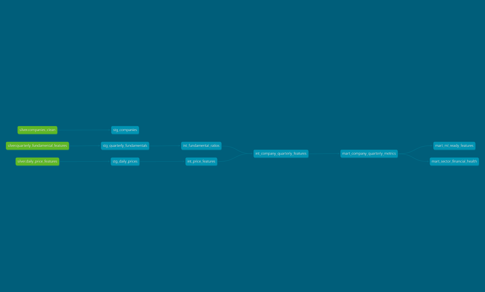

dbt model documentation
Staged, intermediate, and mart models are documented with descriptions, columns, and dependency context.
Static Technical Demo
Built from scratch, this project demonstrates a local financial lakehouse pipeline using PySpark for raw-to-silver ETL, Parquet for storage, and dbt with DuckDB for tested SQL transformations, lineage and analytics marts.
What This Demo Shows
Staged, intermediate, and mart models are documented with descriptions, columns, and dependency context.
dbt Docs exposes how curated Parquet sources flow into downstream SQL layers and final marts.
Schema tests cover record grain, null handling, controlled sector values, and referential integrity.
Architecture
Local Spark transforms raw synthetic CSV files into cleaned silver datasets with schema checks, standardization, deduplication, and window-based feature engineering.
Silver outputs are written as Parquet so the pipeline keeps a clear analytical exchange layer between ETL and SQL modeling.
dbt organizes the DuckDB transformation layer into staging entry points, reusable intermediate logic, and analyst-facing marts.
DuckDB runs the local dbt SQL transformations over Parquet-backed sources without requiring a separate warehouse service.
dbt tests validate core assumptions before the static docs are published, so the demo represents a tested pipeline rather than a mocked interface.
Final Marts
mart_company_quarterly_metricsCompany-quarter financial and market metrics for downstream analysis.
mart_sector_financial_healthSector-quarter rollups for margin, leverage, returns, and price behavior.
mart_ml_ready_featuresFeature-oriented company-quarter dataset for future analytical or ML experimentation.
Lineage Snapshot
